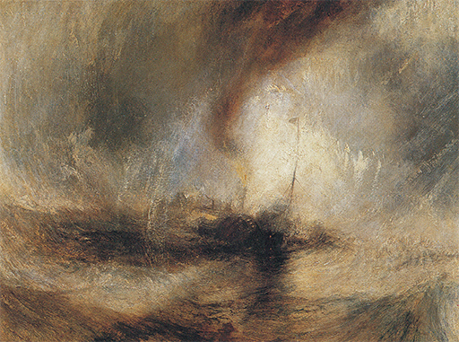
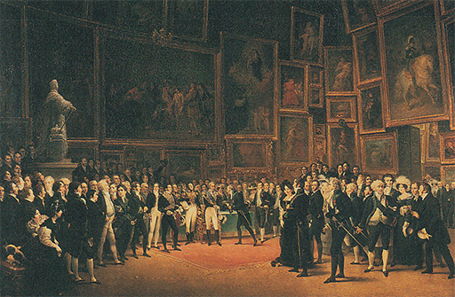

LA RUPTURA DE LA TRADICIÓN
Inglaterra, América y Francia, final del siglo XVIII y primera mitad del XIX
En los libros de historia, los tiempos modernos comienzan con el descubrimiento de América realizado por Cristóbal Colón en 1492. Recordemos la importancia de ese período en el arte. Fue la época del Renacimiento, cuando ser pintor o escultor dejó de ser una ocupación como otra cualquiera para convertirse en profesión aparte. Fue también la época durante la cual la Reforma, en su lucha contra las imágenes en las iglesias, puso término en grandes partes de Europa al empleo frecuente de los cuadros y las estatuas, obligando al artista a buscarse un nuevo mercado. Pero por importantes que fueran todos estos acontecimientos, no ocasionaron una ruptura brusca. La gran masa de los artistas siguieron organizados en gremios y cofradías, teniendo aprendices, al igual que otros artesanos, y continuaron recibiendo muchos encargos de la poderosa aristocracia que los necesitaba para decorar sus castillos y residencias campestres y para agregar sus retratos a la galería de sus antepasados. En otras palabras, incluso después de 1492 el arte conservó un lugar normal en la vida de las gentes de posición, y fue tenido por algo de lo que no se podía prescindir. A pesar de que las modas cambiaron y los artistas se plantearon problemas diferentes, algunos interesándose más por la armónica distribución de las figuras, otros por el contraste de los colores o la consecución de una expresión dramática, los fines de la pintura o de la escultura siguieron siendo, en general, los mismos, y nadie los puso seriamente en duda. Estos fines eran proporcionar cosas bellas a quienes deseaban tenerlas y disfrutar con su posesión. Existieron, es cierto, diversas escuelas de pensamiento que lucharon entre sí acerca del sentido de la belleza y de si era bastante poseer la hábil imitación de la naturaleza por la que llegaron a ser famosos Caravaggio, los pintores holandeses y artistas como Gainsborough, o si la verdadera belleza dependía de la capacidad del artista para idealizar la naturaleza, como se suponía que habían hecho Rafael, Carracci, Guido Reni o Reynolds. Pero estas disputas no nos deben hacer olvidar cuántas cosas tenían en común los participantes en ellas y los artistas que elegían como favoritos. Hasta los idealistas convinieron en que el artista debe estudiar la naturaleza y dibujar del desnudo; e incluso los naturalistas estuvieron conformes en que las obras de la antigüedad clásica no habían sido superadas en cuanto a belleza.
Hacia finales del siglo XVIII, estas coincidencias empezaron a desaparecer gradualmente. Llegamos con ello a los tiempos verdaderamente modernos, que se inician cuando la Revolución francesa de 1789 puso término a tantas de las premisas que se habían tenido por seguras durante cientos, sino miles, de años. El cambio en las ideas del hombre acerca del arte tuvo sus raíces, al igual que la Revolución francesa, en la edad de la razón. El primero de estos cambios se refiere a la actitud del artista respecto a lo que recibe la denominación de estilo. Existe un personaje en una de las comedias de Moliere que se maravilla cuando le dicen que ha hablado en prosa toda su vida sin saberlo. Algo muy semejante les sucedió a los artistas del siglo XVIII. En los primeros tiempos, el estilo del período fue simplemente el modo en que se hacían las cosas, adoptado porque la gente creía que era el mejor y el más correcto para conseguir unos efectos determinados. En la edad de la razón, la gente empezó a darse cuenta del hecho en sí del estilo y los estilos. Muchos arquitectos estaban aún convencidos, como hemos visto, de que las normas transmitidas en los libros de Palladio garantizaban el estilo correcto de los edificios elegantes. Pero cuando se consultan los libros de texto es casi inevitable que surjan otros que digan: «¿Por qué ha de ser precisamente el estilo de Palladio?» Esto es lo que ocurrió en Inglaterra en el siglo XVIII. Entre los más alambicados entendidos hubo algunos que desearon ser distintos de los demás. El más característico de estos caballeros ingleses que pasaron su tiempo discurriendo acerca del estilo y las leyes del gusto fue el famoso Horace Walpole, hijo del primer ministro de Inglaterra. Fue Walpole quien resolvió que era una tontería construir su residencia campestre de Strawberry Hill exactamente igual a cualquier otra villa de correcto estilo palladiano. Sus gustos tendían al romanticismo y a lo fantástico, destacándose por su extravagancia. En perfecta consonancia con este carácter estuvo su decisión de construir su casa de Strawberry Hill en estilo gótico, como un castillo del pasado visto a la luz romántica (ilustración 311).
311 Horace Walpole, Richard Bentley y John Chute. Strawberry Hill, Twickenham, Londres, h. 1750-1775. Mansión neogótica.
En aquel tiempo, hacia 1770, la villa gótica de Walpole se tuvo por una rareza de un hombre que quería hacer ostentación de sus aficiones por lo antiguo; pero considerada a través de lo que vino más tarde, fue algo más. Fue la primera señal de aquella actitud pagada de su cultura que llevó a ciertas gentes a escoger el estilo de sus casas como se escoge la clase de papel para empapelar una habitación.
No fue el aludido el único síntoma de esta clase. Mientras Walpole elegía el estilo gótico para su residencia campestre, el arquitecto William Chambers (1726-1796) estudió el estilo arquitectónico y el arte de los jardines chinos para construir su pagoda china en Kew Gardens. La mayoría de los arquitectos, ciertamente, continuaron fieles a las formas clásicas de la arquitectura renacentista, pero incluso ellos se fueron apartando cada vez más del estilo correcto, mirando con algún recelo la tradición y la práctica del modo de construir que se habían desarrollado a partir del Renacimiento. Advirtieron que muchas de estas prácticas no se hallaban corroboradas realmente por los edificios clásicos de Grecia. Se dieron cuenta con asombro de que lo que se había tenido por normas de la arquitectura clásica, desde el siglo XV, había sido tomado de unas cuantas ruinas romanas de un período más o menos decadente. Hacia esa época, los templos de la Atenas de Pericles fueron redescubiertos y grabados por celosos viajeros, apareciendo sorprendentemente distintos de los diseños clasicistas del libro de Palladio. Así, estos arquitectos empezaron a preocuparse del estilo verdaderamente correcto. El renacer gótico de Walpole rivalizó con un renacer griego, que culminaría en el período de la Regencia (1810-1820). Es este el periodo en el que muchos balnearios ingleses alcanzaron su mayor prosperidad, y es en estas ciudades en las que mejor pueden ser estudiadas las formas del renacer griego. La ilustración 312 muestra una casa en Cheltenham Spa, perfectamente modelada en el más puro estilo jónico de los templos griegos (ilustración 60). La ilustración 313 ofrece un ejemplo del renacer del orden dórico en su forma original, tal como lo hemos visto en el Partenón (ilustración 50). Se trata de un proyecto para una villa obra del famoso arquitecto John Soane (1752-1837). Si la comparamos con la villa palladiana construida por William Kent unos ochenta años antes (ilustración 301), la superficial semejanza no hace más que destacar la diferencia. Kent empleó libremente las formas que encontró en la tradición para componer su edificio. El proyecto de Soane, en comparación, parece un ejercicio del correcto empleo de los elementos del estilo griego.
312 John Papworth. Dorset House, Cheltenham, h. 1825. Fachada estilo Regencia.
313 Sir John Soane. Proyecto para una casa de campo. De Sketches in Architecture, Londres, 1798.
Esta concepción de la arquitectura como aplicación de normas estrictas y sencillas tenía que complacer a los campeones de la razón, cuyo poder e influencia prosiguieron incrementándose en todo el mundo. Así pues, no sorprende que un hombre como Thomas Jefferson (1743-1826), uno de los fundadores de Estados Unidos, y su tercer presidente, proyectara su propia residencia, Monticello, en este preciso estilo neoclásico (ilustración 314), y que la ciudad de Washington, con sus edificios públicos, fuera planeada de acuerdo con las formas del renacer griego.
314 Thomas Jefferson, Monticello, Virginia, 1796-1806.
En Francia, asimismo, la victoria de este estilo se afianzó tras la Revolución francesa. La vieja tradición de los arquitectos y decoradores del barroco y el rococó quedó identificada con el pasado, que acababa de descartarse; había sido el estilo de los castillos de los reyes y de la aristocracia, y los hombres de la Revolución se tenían por ciudadanos libres de una nueva Atenas. Cuando Napoleón, manifestándose como campeón de las ideas revolucionarias, alcanzó el poder en Europa, el estilo neoclásico de la arquitectura se convirtió en el estilo del Imperio. También existió en el continente un renacer gótico, codo con codo con este nuevo renacer del puro estilo griego, impulsado particularmente por aquellos espíritus que desconfiaban del poder de la razón para reformar el mundo y suspiraban por un retorno a la que denominaban época de la fe.
En pintura y escultura, la ruptura de la cadena de la tradición acaso no se percibiera tan inmediatamente como en arquitectura, pero es muy posible que aun tuviera consecuencias mayores. También aquí las raíces de la subversión se hundían en el siglo XVIII. Ya hemos visto cuán insatisfecho con la tradición artística se sintió Hogarth, y cuán deliberadamente se puso a crear un nuevo tipo de cuadro para un público nuevo. Recordemos, por otro lado, cuánto deseó Reynolds mantener la tradición, como si advirtiera que se hallaba en peligro. Éste residía en el hecho mencionado anteriormente de que la pintura había dejado de ser una profesión cualquiera, los conocimientos de la cual se transmitían de maestro a discípulo. Ahora se convertía, por el contrario, en algo así como la filosofía, que tenía que ser enseñada en academias. La misma palabra academia sugiere este cambio de actitud; deriva del nombre de la «villa» en la que el filósofo griego Platón enseñó a sus discípulos, y que poco a poco se fue haciendo extensiva a los grupos de hombres cultos en busca de la sabiduría. Los artistas, en un principio, denominaron academia a sus lugares de reunión, para poner de manifiesto su equiparación con los eruditos a los que concedían tanta importancia; pero hasta el siglo XVIII, estas academias no llegaron gradualmente a enseñorearse de la función de enseñar arte a sus alumnos. Así, los viejos sistemas por los que los grandes maestros del pasado habían aprendido su oficio moliendo colores y colaborando con sus mayores, cayeron en desuso. No sorprende que profesores académicos como Reynolds se sintieran obligados a impulsar a los jóvenes alumnos al estudio diligente de las obras maestras del pasado y a que asimilaran su técnica. Las academias del siglo XVIII estuvieron bajo el patronazgo real para poner de manifiesto el interés que el rey se tomaba por las artes en su nación. Pero para que las artes floreciesen, acaso era menos importante que fueran enseñadas en instituciones reales que el que existieran bastantes personas dispuestas a adquirir cuadros o esculturas de artistas de su tiempo.
En este terreno fue donde surgieron las primeras dificultades, ya que el mismo énfasis puesto en la grandeza de los maestros del pasado, favorecido por las academias, inclinó a los compradores a adquirir obras de los pintores antiguos más que a encargarlas a los de su propio tiempo. Para poner remedio a ello, las academias, primero en París, y en Londres más tarde, comenzaron a organizar exposiciones anuales de las obras de sus miembros. Hoy estamos tan acostumbrados a la idea de que los pintores pinten y los escultores modelen sus obras con vistas principalmente a enviarlas a una exposición que atraiga la atención de los críticos de arte y de los compradores, que difícilmente podemos darnos cuenta de la importancia extraordinaria de este cambio. Estas exposiciones anuales eran acontecimientos sociales que constituían el lugar común de las conversaciones entre la sociedad culta, haciendo y deshaciendo reputaciones. En vez de trabajar para clientes particulares cuyos deseos comprendían, o para el público en general, cuyos gustos preveían, los artistas tuvieron que trabajar ahora para triunfar en una exhibición en la que siempre existía el riesgo de que lo espectacular y pretencioso brillase más que lo sincero y sencillo. La tentación fue, en realidad, muy grande para los artistas, sugiriéndoles la idea de atraer la atención escogiendo temas melodramáticos para sus cuadros y confiando en las dimensiones y en la estridencia del color para impresionar al público. Por ello no es de extrañar que algunos artistas genuinos desdeñaran el arte oficial de las academias, y que el choque de las opiniones entre aquellos cuyas facultades les permitían coincidir con los gustos del público y los que, por el contrario, se sentían excluidos de ellos, amenazaran con destruir el ámbito común en el que el arte se había desarrollado hasta entonces.
Quizá el efecto más inmediato y visible de esta profunda crisis fue que los artistas de todas partes se pusieran a buscar nuevos temas. En el pasado, el asunto de un cuadro se había dado por supuesto en gran medida. Si damos un paseo por nuestros museos y galerías de arte descubriremos en seguida cuántos son los cuadros que representan los mismos y reiterados temas. La mayoría de los cuadros antiguos representan, claro está, asuntos religiosos extraídos de la Biblia y de las vidas de los santos; pero hasta los de carácter profano se reducen en su mayor parte a unos cuantos temas escogidos: los mitológicos de la antigua Grecia con sus relatos de amores y luchas entre los dioses, las narraciones heroicas de Roma con sus ejemplos de valor y autosacrificio, y, finalmente, los temas alegóricos que expresan y personifican alguna verdad general. Es curioso observar lo raramente que los artistas anteriores a la mitad del siglo XVIII se apartaron de estos estrechos límites, así como la escasa frecuencia con que pintaron una escena de alguna novela o un episodio de la historia medieval o contemporánea. Todo esto cambió rápidamente durante el período de la Revolución francesa. Súbitamente, los artistas se sintieron libres para elegir como tema desde una escena shakespeariana hasta un suceso momentáneo; cualquier cosa, en efecto, que les pasara por la imaginación o provocara su interés. Este desdén hacia los temas artísticos tradicionales vino a ser el único elemento que tuvieron en común los artistas encumbrados de la época y los rebeldes solitarios.
No puede ser casualidad que esta ruptura de las tradiciones artísticas europeas fuera realizada en parte por artistas que llegaron a Europa del otro lado del océano, por estadounidenses que trabajaron en Inglaterra. Evidentemente, estos artistas se sintieron menos impulsados a aceptar las costumbres del viejo mundo y mejor dispuestos a intentar nuevas experiencias. El estadounidense John Singleton Copley (1737-1815) es un artista típico de este grupo. La ilustración 315 muestra uno de sus grandes cuadros, que produjo gran impresión cuando fue expuesto por vez primera en 1785. El tema era insólito, realmente. El erudito shakespeariano Malone, amigo del estadista Edmund Burke, se lo sugirió al pintor, proporcionándole también todos los datos históricos necesarios. Se trata del célebre incidente surgido cuando Carlos I de Inglaterra solicitó de la Cámara de los Comunes la detención de cinco de sus miembros, y el presidente de la Cámara desafió la autoridad regia negándose a entregarlos. Un episodio semejante, relativamente próximo, nunca había constituido el tema de un cuadro de grandes proporciones; el procedimiento elegido por Copley para su tarea carecía también de precedentes. Su propósito fue reconstruir la escena tan fielmente como resultara posible, esto es, tal como se habría desarrollado ante los ojos de quienes fueron testigos de ella. No escatimó esfuerzos y molestias para reconstruir los hechos históricos; consultó a historiadores y anticuarios acerca de la forma auténtica de la Cámara en el siglo XVII y de los trajes usados entonces; viajó por el país para recoger tantos retratos como le fuera posible de hombres que se sabía que habían sido miembros del Parlamento en aquel crítico instante. En suma, procedió como podría hacerlo un concienzudo director de escena de hoy al reconstruir un suceso análogo para una película o una obra de teatro. Podemos o no considerar estos esfuerzos bien empleados; pero el hecho es que, durante más de un siglo después, muchos artistas grandes y pequeños conceptuaron su labor como perteneciente a este mismo tipo de rebusca de anticuario, mediante la cual la gente pudiera representarse gráficamente los momentos decisivos del pasado.
315 John Singleton Copley, Carlos I exigiendo la entrega de los cinco miembros inculpados de la Cámara de los Comunes, 1641, 1785. Óleo sobre lienzo, 233,4 x 312 cm; Biblioteca Pública, Boston, Massachusetts.
En el caso de Copley, este intento de evocar el choque dramático entre el Rey y los representantes del pueblo no constituía, ciertamente, una tarea desinteresada de anticuario. Tan sólo dos años antes, Jorge III había tenido que aceptar el desafío de los colonos de América y firmar la paz con Estados Unidos. Burke, de cuyo círculo procedió la sugerencia del tema, se había opuesto tenazmente a la guerra, que consideraba injusta y desastrosa. El sentido de la precedente denegación a las pretensiones del Rey, evocada por Copley, era perfectamente comprendida por todos. Se dice que cuando la Reina vio el cuadro se apartó de él desagradablemente sorprendida, y que después de un largo y penoso silencio le comentó al joven estadounidense: «Podía usted, señor Copley, haber elegido un tema más afortunado para el ejercicio de su pincel.» Ella ignoraba cuán desafortunada llegaría a revelarse esta evocación. Los que recuerden la historia de aquellos años quedarán sorprendidos por el hecho de que, apenas cuatro años más tarde, la escena del cuadro volvió a reproducirse en Francia. Esta vez fue Mirabeau quien denegó al Rey el derecho a poner obstáculos a los representantes del pueblo, dando de este modo la señal para el comienzo de la Revolución francesa de 1789.
La Revolución francesa dio un impulso enorme a este interés por la historia y a la pintura de asuntos históricos. Copley había buscado ejemplos en el pasado nacional de Inglaterra; en sus cuadros históricos hay una tensión romántica que puede ser comparada con el renacer gótico en arquitectura. Los revolucionarios franceses gustaron de sentirse como griegos y romanos vueltos a nacer, y su pintura, no menos que su arquitectura, reflejó su afición a lo que se conocía como «la grandeza de Roma». El líder de estos artistas de estilo neoclásico fue el pintor Jacques-Louis David (1748-1825), que fue el artista oficial del gobierno revolucionario y diseñó los trajes y decorados para exposiciones propagandistas como el Festival del Ser Supremo, en el que Robespierre ofició constituyéndose en sumo sacerdote. Estos hombres consideraron que vivían unos tiempos heroicos y que los acontecimientos de aquellos años eran tan dignos de la atención del pintor como los episodios de la historia griega y romana. Cuando uno de los líderes de la Revolución francesa, Marat, fue asesinado en el baño por una joven fanática, David lo pintó como un mártir sacrificado por su causa (ilustración 316). Marat aparece en esta obra en actitud de haber estado trabajando metido en su baño, con un sencillo pupitre adaptado a la bañera; su atacante le había entregado una solicitud que él estaba a punto de firmar cuando ella le asesinó. La situación no se diría fácil para realizar un cuadro lleno de gravedad y elevación, pero David consiguió hacer que pareciera heroico, y a la vez como si hubiese que conservar los pormenores verídicos propios de un atestado de policía. Había aprendido, con el estudio de la escultura griega y romana, a modelar los músculos y tendones del cuerpo, otorgando al personaje un aspecto de noble belleza; también había aprendido del arte clásico a soslayar todos los detalles no esenciales para el efecto principal, así como a proponerse una gran sencillez. No hay colores matizados ni un complicado escorzo en el cuadro. Comparado con la gran escena teatral de Copley, el cuadro de David parece austero, como una solemne conmemoración del humilde «amigo del pueblo» —como Marat acostumbraba designarse a sí mismo— que había sucumbido a su trágico destino mientras trabajaba por el bien común.
316 Jacques-Louis David, Marat asesinado, 1793. Óleo sobre lienzo, 165 x 128,3 cm; Museos Reales de Bellas Artes de Bélgica, Bruselas.
Entre los artistas de la generación de David que desdeñaron los temas antiguos se halló el gran pintor español Francisco de Goya (1746-1828). Goya era un gran conocedor de la mejor tradición de la pintura española, que había producido a El Greco (ilustración 238) y a Velázquez (ilustración 264), y su Majas en un balcón (ilustración 317) demuestra que, a diferencia de David, no renunció al brillante colorido de los pintores anteriores en favor de la grandiosidad clásica. El gran pintor veneciano del siglo XVIII Giovanni Battista Tiepolo (ilustración 288) había acabado sus días como pintor de la corte en Madrid, y en el cuadro de Goya encontramos trazas de la influencia de su esplendor. Y sin embargo, las figuras de Goya pertenecen a un mundo distinto. Las dos mujeres que lanzan una mirada provocativa al paseante, mientras dos galanes embozados se mantienen en segundo plano, pueden estar más cerca del mundo de Hogarth. Los retratos de Goya, que le procuraron un lugar en la corte española (ilustración 318), recuerdan superficialmente los retratos de Estado tradicionales de Van Dyck (ilustración 261), o los de Reynolds. La maestría con que evoca el brillo de la seda y del oro recuerdan a Ticiano o a Velázquez. Pero al mismo tiempo mira a sus modelos con otros ojos. No es que aquellos maestros halagaran a los poderosos, sino que Goya parece exento de piedad. Goya hacía que en sus rasgos se revelara toda su vanidad y fealdad, su codicia y vacuidad (ilustración 319). Ningún pintor de corte anterior o posterior ha dejado un testimonio tal de sus mecenas.
317 Francisco de Goya, Majas en un balcón, h. 1810-1815. Óleo sobre lienzo, 194,8 x 125,7 cm; Museo Metropolitano de Arte, Nueva York.
318 Francisco de Goya, El rey Fernando VII en un campamento, h. 1814. Óleo sobre lienzo, 207 x 140 cm; Museo del Prado, Madrid.
319 Detalle de la ilustración 318.
No sólo como pintor de retratos se mantuvo Goya independiente de los convencionalismos del pasado. Al igual que Rembrandt, produjo un gran número de aguafuertes, la mayoría de ellos mediante una técnica nueva denominada aguatinta, la cual permite no sólo grabar las líneas sino también modificar las manchas. Lo más sorprendente en las estampas de Goya es que no constituyen ilustraciones de ningún tema conocido, sea bíblico, histórico o de género. Muchas de ellas son visiones fantásticas de brujas y de apariciones espantosas. Algunas son consideradas como acusaciones contra los poderes de la estupidez y la reacción, de la opresión y la crueldad humana que observó Goya en España; otras parecen acabar de dar forma a las pesadillas del artista. La ilustración 320 representa uno de los más alucinantes de sus sueños: la figura de un gigante sentado en el borde del mundo. Podemos calcular sus proporciones colosales por el menudo paisaje del primer término, y ver cómo se transforman en simples manchas casas y castillos enanos. Podemos hacer girar nuestra imaginación en torno a esta aparición horrible, que está conseguida con tanta claridad en sus perfiles como si hubiera sido estudiada del natural. El monstruo está sentado como un íncubo maligno sobre un paisaje a la luz de la luna. ¿Pensaba Goya en la suerte de su país, oprimido por las garras y la insensatez humanas? ¿O creó simplemente una imagen, como si fuera un poema? Pues fue éste el efecto más destacado de la ruptura de la tradición: los artistas pasaron a sentirse en libertad de plasmar sus visiones sobre el papel como sólo los poetas habían hecho hasta entonces.
320 Francisco de Goya, El coloso, 1810-1818. Aguatinta, 28,7 x 20,8 cm.
El ejemplo más sobresaliente de esta nueva dimensión del arte fue el del poeta y místico inglés William Blake (1757-1827), once años más joven que Goya. Blake fue un hombre profundamente religioso que vivió encerrado en su propio mundo, desdeñando el arte oficial de las academias y renunciando a aceptar sus normas. Algunos creyeron que estaba completamente loco; otros lo menospreciaron como un pobre chiflado, y sólo algunos de sus contemporáneos creyeron en su arte y le libraron de la miseria. Vivió realizando grabados, unas veces para otros, y en ocasiones para ilustrar sus propios poemas. La ilustración 321 representa una de las ilustraciones de Blake para su poema Europa, Una profecía. Se dice que Blake vio esta enigmática figura de un anciano inclinado para medir el globo con un compás en una visión flotando encima de él, y en lo alto de una escalera, cuando estuvo viviendo en Lambeth. Existe un pasaje en la Biblia (Proverbios 8, 22-28), en el cual la Sabiduría habla y dice:
Yahveh me creó, primicia de su camino, antes que sus obras más antiguas. Desde la eternidad fui fundada, desde el principio, antes que la tierra. Cuando no existían los abismos fui engendrada, cuando no había fuentes cargadas de agua. Antes que los montes fuesen asentados, antes que las colinas, fui engendrada. No había hecho aún la tierra ni los campos, ni el polvo primordial del orbe. Cuando asentó los cielos, allí estaba yo, cuando trazó un círculo sobre la faz del abismo…
Es esta grandiosa visión del Dios poniendo una bóveda sobre la faz del abismo la que ilustró Blake. Hay algo de la figura del Dios según Miguel Ángel (ilustración 200) en esta imagen de la creación, pues Blake fue un admirador de Miguel Ángel. Pero en sus manos, la figura se ha convertido en maravillosa y fantástica. En efecto, Blake se formó una mitología peculiar, y el personaje de la visión no fue, estrictamente hablando, un todopoderoso, sino un ser creado por la imaginación de Blake al que éste dio el nombre de Urizen. Aunque Blake concibió a Urizen como creador del mundo, juzgó que éste era perverso, siendo por consiguiente su creador un espíritu maligno. De aquí el carácter de pesadilla pavorosa de la visión, en la que el compás aparece como un relámpago de luz en una noche oscura y tormentosa.
321 William Blake, El Anciano de los Días, 1794. Grabado en acero con acuarela, 23,3 x 16,8 cm; Museo Británico, Londres.
Blake estuvo tan sumido en sus visiones que rechazó dibujar del natural y confió enteramente en su mirada interior. Es fácil señalar incorrecciones en sus dibujos, pero hacerlo así sería ignorar el objeto de su arte. Al igual que los artistas medievales, no se preocupó de la perfecta reproducción de las figuras, porque el sentido de cada una de las que componían sus sueños fue de tan avasalladora importancia para él que la simple cuestión de su corrección le parecía trivial. Fue el primer artista después del Renacimiento que de este modo se rebeló conscientemente contra las normas establecidas por la tradición, y difícilmente podemos condenar a sus contemporáneos por haberle juzgado horrible. No hace siquiera un siglo que fue universalmente reconocido como una de las figuras más importantes del arte inglés.
Existió una rama de la pintura que se aprovechó mucho de la nueva libertad del artista en su elección de temas: la pintura de paisajes. Hasta entonces, ésta había sido considerada como una rama menor del arte. En particular, los pintores que habían consagrado su existencia a pintar vistas de las residencias campestres, parques o perspectivas pintorescas no eran considerados seriamente como artistas. Esta actitud cambió un tanto como consecuencia del espíritu romántico de finales del siglo XVIII, y grandes artistas se consagraron a elevar este genero de pintura a una nueva dignidad. En esto, también, la tradición podía servir como ayuda y obstáculo a la par, y resulta sugestivo observar de qué manera tan distinta dos paisajistas ingleses de la misma generación abordaron este problema. Uno fue Joseph Mallord William Turner (1775-1851); el otro, John Constable (1776-1837). Existe algo en el contraste entre estos dos hombres que nos recuerda el que existió entre Reynolds y Gainsborough, pero en los cincuenta años que separan sus generaciones respectivas, el abismo abierto entre las actitudes de ambos rivales se hizo mucho mayor. Turner, como Reynolds, fue un artista de un éxito extraordinario, cuyas obras producían con frecuencia gran sensación en la Real Academia. Tanto como Reynolds, estuvo obsesionado por el problema de la tradición, siendo la ambición de su vida situarse al nivel —si no sobrepasarle— del famoso paisajista Claude Lorrain (ilustración 255). Cuando legó sus cuadros y bocetos a la nación, puso como condición que uno de ellos (ilustración 322) permaneciera siempre colgado al lado de una obra de Claude Lorrain.
322 Joseph Mallord William Turner, Dido fundando Cartago, 1815. Óleo sobre lienzo, 155,6 x 231,8 cm; National Gallery, Londres.
Turner no se hizo mucha justicia a sí mismo incitando a esta comparación. La belleza de los cuadros de Claude Lorrain reside en su serenidad y sencillez apacible, en la claridad y precisión de su mundo de ensueño y en la ausencia de efectos estridentes. Turner tuvo, también, visiones de un mundo fantástico bañado en luz y de belleza refulgente, pero no fue el suyo un mundo apacible sino en movimiento; no sencillamente armónico, sino de espectacularidad deslumbradora. Amontonó en sus cuadros todos los efectos que podían hacerlos más sorprendentes y dramáticos, y, de haber sido menos artista de lo que fue, este deseo de impresionar al público muy bien podía haberle conducido a resultados desastrosos. Sin embargo, fue tan soberbio tramoyista, trabajó con tan buen gusto y tanta pericia que evitó ese peligro, y sus cuadros menores nos dan, en efecto, la concepción más grandiosa y sublime de la naturaleza. La ilustración 323 muestra una de las más atrevidas obras de Turner, la que representa un vapor en medio de la ventisca. Si comparamos esta agitada composición con la marina de Vlieger (ilustración 271) podremos calcular el grado de osadía de la concepción de Turner. El artista holandés del siglo XVII no sólo pintó lo que vio de una rápida ojeada, sino también, hasta cierto punto, lo que sabía que existía allí. Sabía cómo estaba construido un barco y cuál era su aparejo, y, contemplando su obra, resulta fácil reconstruir estos navíos. Nadie podría reconstruir un vapor del siglo XIX ateniéndose a la marina de Turner. Todo lo que él nos proporciona es la impresión del sombrío casco y del gallardete ondeando bravamente en la punta del mástil: la impresión de una lucha con el mar furioso y la amenazadora tempestad. Casi percibimos el ímpetu del viento y el golpe de las olas. No podemos detenernos en los pormenores; todos ellos han quedado absorbidos por el deslumbramiento de la luz y la sombría oscuridad de la tormenta. No sabemos si Turner vio tormentas de esta clase, ni si son realmente así en el mar, pero sabemos que su representación es una tormenta sobrecogedora y terrible, como la que imaginamos al leer un poema romántico o al escuchar música romántica. En Turner, la naturaleza trasluce y expresa siempre emociones humanas; nos sentimos pequeños y abrumados ante las fuerzas que no podemos gobernar, por lo que nos vemos impulsados a admirar al artista que ha tenido a merced suya las fuerzas de la naturaleza.

323 Joseph Mallord William Turner, Tormenta de nieve: Un vapor a la entrada del puerto, 1842. Óleo sobre lienzo, 91,5 x 122 cm; Tate Gallery, Londres.
Las ideas de Constable eran muy diferentes. Para él, la tradición con la que quería rivalizar Turner, superándola incluso, apenas era otra cosa que un engorro. Esto no quiere decir que no fuese capaz de admirar a los maestros del pasado. Pero él quiso pintar lo que veía con sus propios ojos, no con los de Claude Lorrain. Puede decirse que prosiguió el camino del arte donde Gainsborough lo había dejado (ilustración 307). Pero incluso Gainsborough eligió los temas que eran pintorescos según un criterio tradicional, pues aún había seguido considerando la naturaleza como un fondo agradable ante el que situar escenas idílicas. Para Constable, todas esas ideas carecían de importancia, porque no deseaba nada más que la verdad. «Hay espacio suficiente para un pintor normal —le escribió a un amigo en 1802—; el gran vicio de nuestra época es la audacia, el intento de hacer algo más allá de la verdad.» Los paisajistas elegantes que seguían tomando a Claude Lorrain por modelo pusieron en juego un gran número de recursos, con ayuda de los cuales cualquier aficionado podía componer un verdadero cuadro sumamente agradable. Un árbol sugestivo en el primer término serviría como violento contraste de las distantes perspectivas que podían abrirse en la parte central. Las gamas de color se elaboraban primorosamente. Los colores cálidos, con preferencia las tonalidades pardas y doradas, debían estar en el primer término; los fondos debían diluirse en tintas de azul pálido. Existían recetas para pintar nubes, y recursos especiales para reproducir las cortezas de los robles nudosos. Constable despreció todas estas reglas preestablecidas. Se dice que un amigo suyo le reconvino porque no daba a su primer plano el requerido color castaño de un viejo violín, y que Constable cogió un violín y lo colocó delante de él sobre la hierba para mostrar al amigo la diferencia entre el verde jugoso tal como lo vemos y los tonos cálidos exigidos por las reglas convencionales. Pero Constable no quería sorprender a nadie con innovaciones atrevidas, sino que procuraba tan sólo ser fiel a su propia visión. Salía al campo para tomar notas del natural y reelaborarlas después en su estudio. Sus apuntes (ilustración 324) son más atrevidos a menudo que sus cuadros terminados, pero aún no había llegado el momento de que el público aceptara el esbozo de una rápida impresión como obra digna de ser expuesta. Con todo, sus cuadros produjeron impresión cuando fueron exhibidos por vez primera.
324 John Constable, Troncos de árboles (estudio), h. 1821. Óleo sobre papel, 24,8 x 29,2 cm; Victoria and Albert Museum, Londres.
La ilustración 325 reproduce el esbozo de un cuadro que hizo famoso a Constable en París cuando fue expuesto allí en 1824. Representa una sencilla escena rural, una carreta de heno vadeando un río. Debemos perdernos en el cuadro, mirar los retazos de sol en los prados del fondo y las nubes pasajeras; tenemos que seguir el curso del arroyuelo y quedarnos un rato junto a la pequeña casa, pintada con tanta contención y simplicidad, para apreciar la sinceridad absoluta del artista, su negativa a ser más imponente que la naturaleza y su total carencia de afectación y pretensiones.
325 John Constable, La carreta de heno, 1821. Óleo sobre lienzo, 130,2 x 185,4 cm; National Gallery, Londres.
La ruptura con la tradición había abandonado a los artistas a las dos posibilidades personificadas en Turner y Constable. Podían convertirse en pintores-poetas, o decidir colocarse frente al modelo y explorarlo con la mayor perseverancia y honradez de que fueran capaces. Existieron, ciertamente, grandes artistas entre los pintores románticos europeos, como el pintor alemán Caspar David Friedrich (1774-1840), cuyos paisajes reflejan el estado de ánimo característico de la lírica romántica de su época, con la que estamos familiarizados a través de las canciones de Schubert. Su cuadro de un panorama desolado (ilustración 326) puede hacernos pensar en el espíritu de los paisajes chinos (ilustración 98), tan íntimamente ligados a las ideas poéticas. Pero por grande y merecido que fuera el éxito que estos pintores consiguieron en sus días, hoy creemos que quienes siguieron el camino de Constable, y trataron de explorar objetivamente el mundo visible, lograron algo de importancia más duradera.
326 Caspar David Friedrich, Paisaje de las montañas de Silesia, h. 1815-1820. Óleo sobre lienzo, 54,9 x 70,3 cm; Pinacoteca Moderna, Munich.

François-Joseph Heim, Carlos X de Francia entregando distinciones en el Salón de París de 1824, 1825-1827. Muestra del nuevo papel jugado por las exposiciones oficiales. Óleo sobre lienzo, 173 x 256 cm; Museo del Louvre, París.